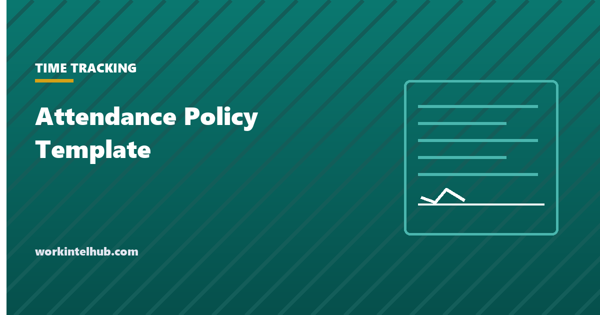

Attendance Policy Template

An attendance policy states what reliable attendance means at your company, how to report an absence or lateness, how attendance is tracked, what happens when it falls short, and which absences are outside the system entirely because the law protects them.
The generator below builds one from your settings. The two decisions that shape it, points versus occurrences and the wording of the protected-absence clause, are explained after it, along with the situations where a well-run policy still produces a claim.
Generate the policy
The protected-absence section is deliberately generic and names your state so that whoever reviews the policy checks the state's sick leave and predictive scheduling rules against it. Have employment counsel read it before it goes in the handbook.
Points or occurrences
| Points | Occurrences | |
|---|---|---|
| How it counts | Different events carry different weights | Every event is one; consecutive days are one |
| Strength | Distinguishes a no-call, no-show from a late arrival | Simple; a week of flu is one occurrence, not five |
| Weakness | Managers apply it mechanically and miss patterns | Cannot express that some events are worse |
| Legal risk | Higher: points assigned to protected absences are the typical claim | Lower, but the same exclusion must be applied |
| Suits | Shift-based workforces with frequent short absences | Smaller teams and salaried roles |
Either system works if the exclusions are applied. Neither works if the manager assigning points does not know which absences are protected, which is why the policy names HR as the place to ask, and why the attendance tracking guide spends most of its length on the collisions between point systems and the ADA and FMLA.
The protected-absence clause
This section is the one that decides whether the policy is an asset or a liability. Four categories have to be outside the count.
- FMLA leave, including intermittent leave, and including the situation under 29 CFR 825.303 where an employee in a medical emergency could not follow the call-in procedure. A point assigned for that absence is interference with FMLA rights.
- ADA accommodation. Modified schedules and leave can be accommodations. The employee who says a condition is behind the absences has started the interactive process, and the policy has to allow for it.
- State paid sick leave. Most states with paid sick leave laws prohibit counting protected sick time against the employee. California Labor Code 246.5, for example, prohibits an employer from denying the right to use accrued sick days or discriminating against an employee "for using accrued sick days", and creates a presumption of retaliation for adverse action within 30 days of a complaint.
- Civic and statutory leave. Jury and witness duty, voting, military service, workers' compensation, and the various state-specific leaves, including bereavement leave in six states.
The generator's clause names your state so that whoever reviews the policy checks the state list rather than assuming the federal one is complete. The PTO tracking guide covers the state-by-state leave rules the clause has to sit alongside.
The job abandonment line
The policy sets the number of no-call, no-show shifts after which the absence is treated as a resignation. Three is common; some states' unemployment rules use a longer period, and the process of contact attempts and the emergency exception matter more than the number. Our job abandonment page has the procedure and the letters the policy refers to.
Enforcing it consistently
- Give it to everyone, in writing, and record the acknowledgment. A policy the employee never received is not a policy for disciplinary purposes.
- Apply it the same way across managers. The claim is rarely that the policy is unfair; it is that it was enforced against one person and not another. Track consequences centrally.
- Check the reason before the point. A pause of one question, "is this something that might be protected?", before an occurrence is logged removes most of the risk.
- Use the write-up form when a threshold is reached, so that the facts, the policy and the employee's response are on one document. The write-up template is built for it.
- Look at the pattern, not just the count. Absences clustered on Mondays, or around a particular manager's shifts, are information the count hides.
Key takeaways
- An attendance policy needs definitions, a reporting procedure, a tracking system, consequences, a job abandonment line, and a protected-absence clause that sits outside all of it.
- Points weight events differently and suit shift workforces; occurrences are simpler and suit small teams. Both depend on the exclusions being applied.
- FMLA leave, ADA accommodation, state paid sick leave and civic leave must carry no points. Points on protected absence is the standard claim.
- Most state sick leave laws prohibit counting protected sick time against the employee; California adds a presumption of retaliation within 30 days of a complaint.
- Give the policy to everyone in writing, enforce it identically across managers, and ask whether an absence might be protected before logging it.
- Use the write-up form at each threshold so the facts and the employee's response are on one document.
Frequently asked questions
What should an attendance policy include?
Definitions of absence, lateness and no-call no-show; how and when to report; how attendance is tracked, by points or occurrences; the consequences at each threshold; the job abandonment rule; and a clause listing the absences protected by law that are never counted. The generator above produces all of those from your settings.
What is a points-based attendance policy?
A system where each attendance event carries a point value, with heavier events such as a no-call no-show scoring more than a late arrival, and thresholds that trigger warnings and ultimately termination. Points usually expire after a rolling period, commonly twelve months. Protected absences must never carry points.
Can an employer count sick days against attendance?
Not where the sick leave is protected. Most state paid sick leave laws prohibit counting protected sick time against the employee, FMLA absences cannot be held against attendance, and ADA-related absences may be accommodations. Unprotected sick days can be counted only if the policy says so and it is applied consistently.
What is a reasonable grace period for lateness?
Five to seven minutes is common where one is used, mainly to avoid disputes over clock accuracy. A grace period is a policy choice, not a legal requirement; the time worked still has to be paid and recorded accurately regardless of how lateness is treated.
How many no-call no-shows before termination?
Most policies use three consecutive scheduled shifts as the point at which the absence is treated as job abandonment, after documented attempts to reach the employee. Some states' unemployment rules use a longer period, and an employee who could not call because of a medical emergency is excused from the procedure.
Do I need a lawyer to review an attendance policy?
For the protected-absence clause, yes, or at least a review against your state's sick leave, predictive scheduling and leave laws. The rest of the policy is operational. The generator names your state in that clause specifically so the review is prompted.